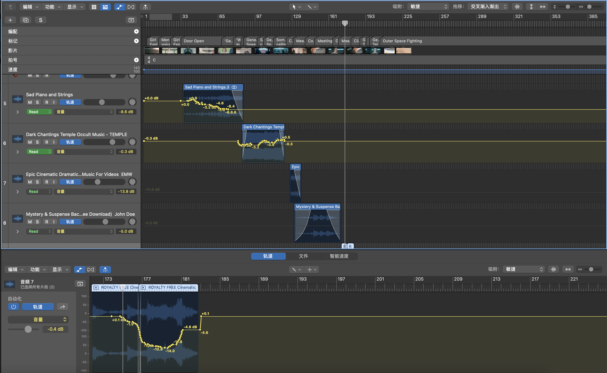

Week 11
Making Music for Film and Animation 1 - Week 11 Log Book

Lecture Content and Reflection
Action Film
- A type of film pretty hard to make something interesting - usually need to follow what exactly happens on the screen.
- Most of the time score what’s on the screen - Physical drama.
- Action scene - capturing incredible feats of endurance. Precision, skill, indeed, physical extremes.
1940s Eric Corngold - Seahwak
- Like all the films at that time, it had a heavy layer of opening music.
- When the camera moves to the ships, lots of wind instruments (horns) are involved, creating a massive momentum.
- In the fighting scene, the composer chooses to use some short staccato notes with the horns and ascending piano scales to heighten the intensity.
- The movements of the music in the fighting scene really fit the character's actions.
- When the character enters the door and stops fighting, the music begins to subdue with the horns gradually fading out. Only a sustained organ sound is there to let the audience relax from the nervous emotion.
- The music’s rhythm and tempo are closely linked with the character’s actions.
- When they are swinging the sword or running (fast movements) some short staccato notes are used.
- When they stop the movements and look at each other on the side of the table, some long-sustained notes will be involved.
- The composer loves to use some ascending melodies to raise the nervous atmosphere.

Major Project
Volume Automation
- I used the 'Touch' method to record the volume automation while playing the track with the film and diagonal.
- On top of that, I create some fading in/out by draging the line in the start or end of a track. 
Before adding volume automatiion
After adding volume automatiion
Adding Effects
- The string and piano track are pretty dry right now.
- I added a reverb and delay to create the space.
- However, after adding the reverb, I find out it lost the original feeling pf cello and piano. I choose to move all of these effects into a seperate bus so I can control the flow of the effects.
Track before adding effects
Track after adding effects
Track after adding effects on seperate bus